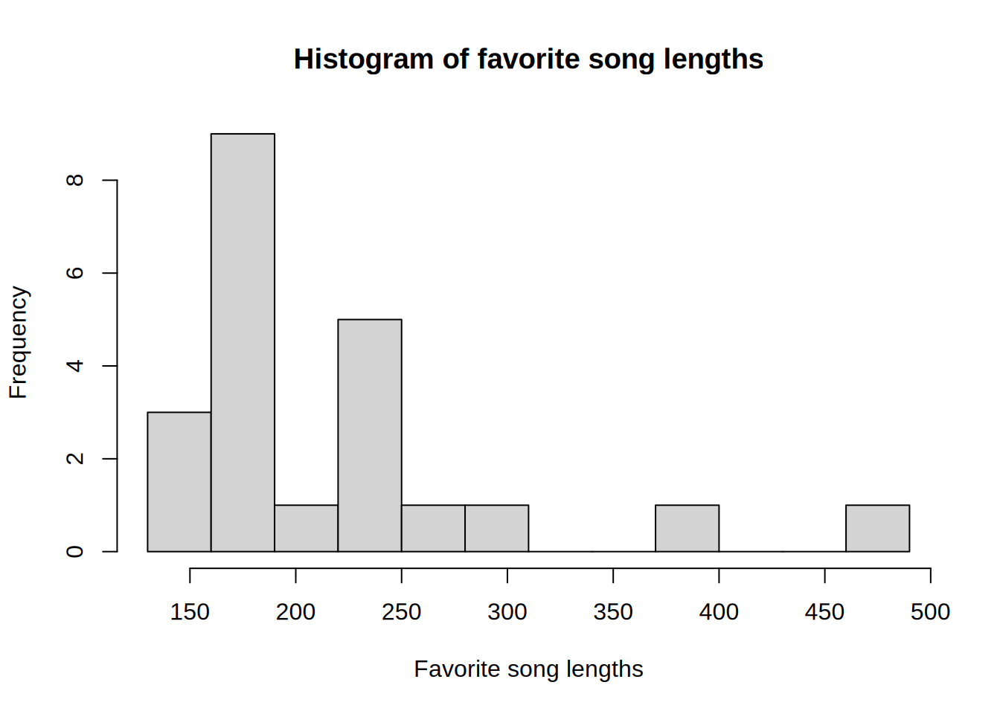
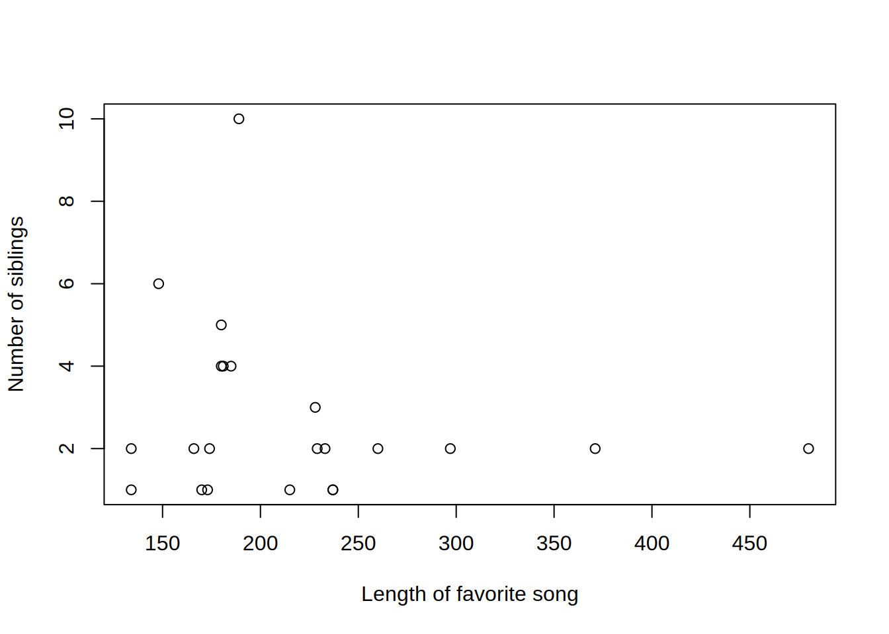
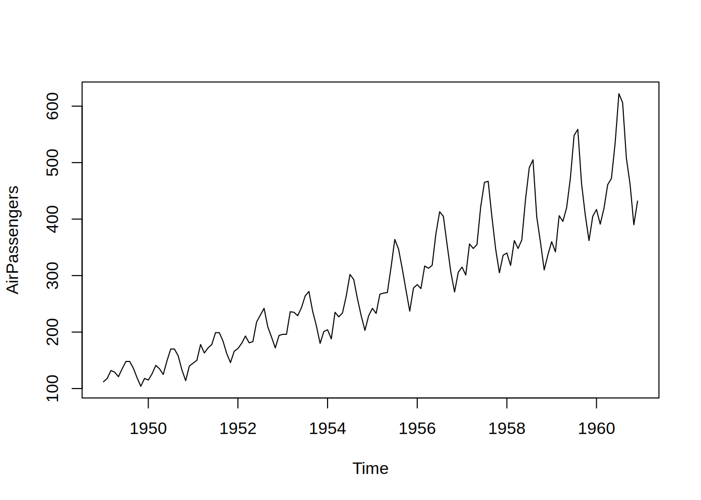

class.data <- read.csv("class-data.csv")
sort(class.data$length_of_favorite_song) [1] 134 134 148 166 170 173 174 180 180 181 185 189 215 228 229 233 237 237 260
[20] 297 371 480Don’t worry about the code used to generate these tables and graphs. It uses a programming language called “R” that is widely used by statisticians, but there there is absolutely no expectation for you to deal with it in this course.
Consider our data set we generated in class during the first week. In particular, we’re going to look at the lengths of your favorite songs.
class.data <- read.csv("class-data.csv")
sort(class.data$length_of_favorite_song) [1] 134 134 148 166 170 173 174 180 180 181 185 189 215 228 229 233 237 237 260
[20] 297 371 480As presented, it’s kind of overwhelming. How can we visualize this data set so that it’s more understandable?
First, let’s break it up into classes. Since the smallest length is 134 s and the largest is 480 s, we’ll split the interval [130, 490] up into 12 classes of class width 30. Then we can construct a frequency table. The entries are the frequencies of each class, i.e., the number of elements in the data set in that class.
breaks <- seq(130, 490, by = 30)
classes <- cut(class.data$length_of_favorite_song, breaks, right = FALSE)
as.data.frame(table(classes)) classes Freq
1 [130,160) 3
2 [160,190) 9
3 [190,220) 1
4 [220,250) 5
5 [250,280) 1
6 [280,310) 1
7 [310,340) 0
8 [340,370) 0
9 [370,400) 1
10 [400,430) 0
11 [430,460) 0
12 [460,490) 1In this case, the lower class limits are 130, 160, 190, …, 460, and the upper class limits are 159, 189, …, 489. (Note that in the table above, R confusingly prints 160, 190, etc as the upper endpoint of each class. But it’s using interval notation, and 159 is the largest integer in the interval [130, 160), 189 is the largest integer in [160, 190), etc.)
The class boundaries are the midpoints of the adjacent upper and lower class limits, so in this case, 159.5, 189.5, …, 459.5. Note in particular that we do not consider outer endpoints.
The class midpoints are the midpoints of each class, i.e., the average of the lower class limit and the upper class limit. So the first class has midpoint \(\frac{130 + 159}{2} = 144.5\).
Next, let’s look at a relative frequency distribution. Here, the entries in each row correspond to the proportion (frequency divided by sample size, possibly given as a percent) in each class.
as.data.frame(prop.table(table(classes))) classes Freq
1 [130,160) 0.13636364
2 [160,190) 0.40909091
3 [190,220) 0.04545455
4 [220,250) 0.22727273
5 [250,280) 0.04545455
6 [280,310) 0.04545455
7 [310,340) 0.00000000
8 [340,370) 0.00000000
9 [370,400) 0.04545455
10 [400,430) 0.00000000
11 [430,460) 0.00000000
12 [460,490) 0.04545455Next, we have a cumulative frequency distribution, where entries in each row are the sums of the frequencies in all the classes up to that point.
as.data.frame(cumsum(table(classes))) cumsum(table(classes))
[130,160) 3
[160,190) 12
[190,220) 13
[220,250) 18
[250,280) 19
[280,310) 20
[310,340) 20
[340,370) 20
[370,400) 21
[400,430) 21
[430,460) 21
[460,490) 22Finally, we have the relative cumulative frequency distribution, which is exactly what it sounds like – the proportions of the cumulative frequencies. Note that the final entry will always be 100%.
as.data.frame(cumsum(prop.table(table(classes)))) cumsum(prop.table(table(classes)))
[130,160) 0.1363636
[160,190) 0.5454545
[190,220) 0.5909091
[220,250) 0.8181818
[250,280) 0.8636364
[280,310) 0.9090909
[310,340) 0.9090909
[340,370) 0.9090909
[370,400) 0.9545455
[400,430) 0.9545455
[430,460) 0.9545455
[460,490) 1.0000000A nice visual representation of a frequency distribution is a histogram. Along the horizontal axis, we have the classes. And along the vertical axis, we have the frequencies. Over each class, we draw a bar whose height is the corresponding frequency.
hist(class.data$length_of_favorite_song, breaks, right = FALSE,
xlab = "Favorite song lengths",
main = "Histogram of favorite song lengths")
This data set is skewed right. See the examples on p. 41 of the textbook for a few other possibilities.
There are a wide variety of statistical graphs touched on in Section 3.3 of our textbook. We’ll focus on two of them (which are the ones you’ll encounter in Homework 3).
These are kind of like a sideways histogram where we use numbers instead of bars. Each row has 10’s place number as its heading and the rest of the entries are the numbers from the 1’s place. Naturally, it works best with 2-digit numbers.
Let’s play with our data set a bit to turn it into two digit-numbers. In particular, we’ll divide by 10 and then round. So the new data set is of song lengths in dekaseconds (1 dekasecond = 10 seconds).
song.length.in.dekaseconds <- round(class.data$length_of_favorite_song / 10)
sort(song.length.in.dekaseconds) [1] 13 13 15 17 17 17 17 18 18 18 18 19 22 23 23 23 24 24 26 30 37 48Now let’s see a stem plot:
stem(song.length.in.dekaseconds)
The decimal point is 1 digit(s) to the right of the |
1 | 335777788889
2 | 2333446
3 | 07
4 | 8If we have paired numerical data, then we can plot points in the plane, making one variable the \(x\)-coordinate and the other variable the \(y\)-coordinate. This gives us a scatter plot.
Let’s plot favorite song length against number of siblings.
plot(class.data$length_of_favorite_song, class.data$number_of_siblings,
xlab = "Length of favorite song",
ylab = "Number of siblings")
If we connect the dots in a scatter plot, we get a line graph. And if the \(x\)-coordinates correspond to a particular time, then we get a time-series graph.
We don’t really have any good data from our data set for a time series graph, so here’s one that’s built into R. The AirPassengers gives the monthly totals (in thousands) of international airline passengers from 1949 to 1960.
plot(AirPassengers)